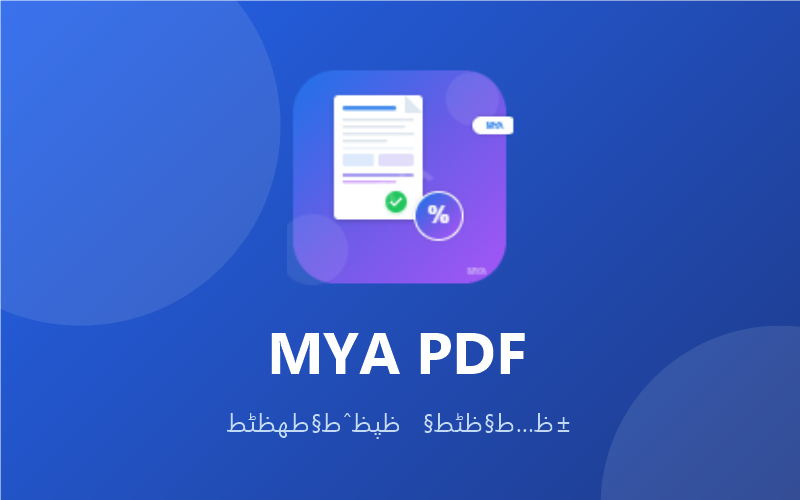

MYA PDF - الحل الأسهل لتنزيل الفواتير الضريبية والإيصالات. حفظ فواتير إلكترونية، تصدير Excel، إدارة مرتجعات VAT بكل سهولة.

كل ما تحتاجه لتنزيل الفواتير الضريبية والإيصالات في مكان واحد
تنزيل فواتير إلكترونية بنقرة واحدة مباشرة من النظام. سهولة في تنزيل جميع أنواع الفواتير الضريبية.
تنزيل فواتير ضريبيهحفظ وتنزيل جميع الإيصالات الضريبية بسهولة. تنظيم الإيصالات في مكان واحد.
تنزيل ايصالاتتصدير الفواتير والإيصالات إلى ملفات Excel لسهولة المراجعة والتحليل.
تصدير بياناتإدارة مرتجعات ضريبة القيمة المضافة بسهولة. متابعة واسترجاع المستحقات.
مرتجعات VATتنظيم وتصنيف الفواتير والإيصالات. بحث سريع وسهل في جميع المستندات.
مايا فواتيرحفظ الفواتير في ثوانٍ معدودة. واجهة سهلة وسريعة الاستخدام.
MYA PDFصور حقيقية من واجهة الإضافة ولوحة التحكم
3 خطوات بسيطة لتنزيل الفواتير الضريبية والإيصالات
قم بتثبيت إضافة MYA PDF من Chrome Web Store مجاناً
افتح صفحة الفواتير الإلكترونية على متصفح Chrome
اضغط على زر التنزيل واحصل على فاتورتك فوراً
MYA PDF - تنزيل فواتير ضريبية وتنزيل ايصالات بسهولة
تثبيت MYA PDF الآنبعد تثبيت إضافة MYA PDF، افتح صفحة الفواتير الإلكترونية واضغط على زر التنزيل. سيتم حفظ الفاتورة تلقائياً بصيغة PDF.
نعم، MYA PDF آمن تماماً. الإضافة لا تجمع أي بيانات شخصية ولا ترسلها لأي جهة خارجية.
نعم، MYA PDF يدعم تنزيل جميع أنواع الإيصالات الضريبية من النظام.
نعم، MYA PDF مجانية تماماً ولا توجد أي رسوم إضافية.
MYA PDF يعمل على متصفح Google Chrome وجميع المتصفحات المبنية على Chromium.
MYA PDF يوفر خاصية تصدير البيانات مباشرة إلى ملفات Excel لسهولة المراجعة.
انضم لآلاف المستخدمين الذين يستخدمون مايا فواتير لتنزيل فواتيرهم الضريبية والإيصالات
تثبيت MYA PDF من Chrome Web Store